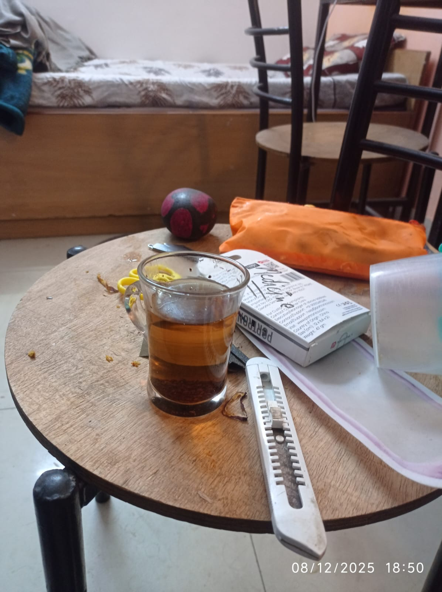

Microblog Summary
Fitness / Body
Push-Up Proper Form (Simple Notes)
Body Position: Squeeze your glutes, tighten your abs, and keep your lower back flat. Do not raise or sag your hips. Your body should stay like a strong plank.
Shoulders: At the top of every rep, push the floor away and spread your shoulder blades apart. Keep the shoulder blades flat against the ribs. Do not let the shoulders stick out.
Hand Position: Place your hands slightly wider than shoulder width. Spread your fingers wide. Turn your hands slightly outward so the index fingers face forward.
Elbows: Keep your elbows close to your body. Do not let them flare out to the sides. Close elbows protect your shoulders.
Forearms: Keep your forearms vertical. Lean your shoulders slightly forward. Do not allow the forearms to tilt backward.
Movement: Lower your chest toward the floor with control. Use full range of motion. Push up until your arms are fully straight. Every rep should start and finish strong.
Incline Push-Ups: If floor push-ups are too hard, use a wall, table, or counter. Walk your feet back into a plank and apply the same rules: tight glutes, tight abs, elbows close. Aim for 3 sets of 8 clean reps, resting 2–3 minutes. Lower the height when it becomes easy.
Plank: Hold a plank on the floor using the same body position as a push-up. Planks build the core strength needed for proper push-ups.
Do Not Do: Knee push-ups, half reps, elbow flare, or loose body positions.
Rule: Perfect form first. Strength comes later.
winter arc goal : 4 hour deep work habit at end of arc & build gym habit and gain 3 kg weight.
Career / Skills
LONG-TERM → MONEY / CAREER** # A. Core Technical Skills 1. DSA (top priority) 2. Full-stack development (2 real projects) 3. Flutter app development ### B. Leverage & Monetization 4. SaaS / online income path --- ## LONG-TERM → CORE PERSONAL SYSTEM ### C. Communication & Social Presence 1. Speak less, act more 2. Assertiveness (no “nice guy” behavior) 3. Clear communication & English conversation (work, interviews, collaboration) ### D. Discipline & Control 4. Consistency & discipline as default behavior 5. Quit pornography addiction (rule, not goal) ### E. Psychological Capacity 6. Mental toughness through training and discomfort
Current goal : Build the habit of deep work — consistent, distraction-free focus to master coding/DSA long-term. Eventually reach 4 hours/day of deep work through gradual compounding. Woke 7:00 a.m. Started deep work at 7:10 a.m. for 30 mins. Studied Inheritance and Polymorphism in Java. Focus: 8/10. Felt solid, no distractions.
Self-Improvement / Discipline
self-improvement is good
my biggest weakness in my life is not porn addiction, not communicating well, not physique, not insecurity, but: "Starting thing that I don't able to finish". any course, books, etc. Jumping from one course to another, this playlist to others, this book to that book, fr. ex: starting javascript by super side but not finishing etc...
integrity : it's a choice between what convenient and whats right. hard tk develop bcz it need courage radical honestly, but this is the only way to truly live
Dating / Women
let's say you solve all your dating and women problem, like dating, sex and anything related to women, this doesn't mean you solved all you life problem no women can solve your working hard, lifting heavy weight , facing fear on mountain, fear anything this is totally different thing...
i was on some women forum on reddit and i also generally observed women saying like “ i want a guy, here is my list - i think that guy that checks all ticks in my list ( for e.g. 6 ft tall, muscular , rich, jawline , fairness, etc all the bullshit you heard of commonly ”...
Ideas
Future Cool idea to build :- The “Shredding Alarm Clock” is a quirky, motivational device designed to punish snoozing. It functions like a normal alarm clock, but with a twist: when the alarm goes off, you must turn it off within a set time, or a small motorized shredder destroys whatever is placed your real money...
Spiritual / Moral
good day and productive , grateful for this life and not fighting for attention of anyone. thank you Allah for this life and for giving me this chance to live and learn and grow and improve and help others and make a difference in this world.